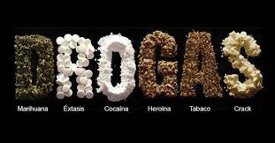

QUE SON LAS DROGAS?

Las drogas son sustancias que, cuando se introducen en el organismo, actúan sobre el sistema nervioso central. Esto provoca cambios que pueden afectar a la conducta, el estado de ánimo o la percepción. Además, su consumo puede comportar: Dependencia psicológica.Según la Organización mundial de la salud (OMS), droga es toda sustancia que introducida en un organismo vivo por cualquier vía (inhalación, ingestión, intramuscular, endovenosa) es capaz de actuar sobre el sistema nervioso central provocando una alteración física y/o psicológica, la experimentación de nuevas sensaciones o la modificación de un estado psíquico, es decir, capaz de cambiar el comportamiento de la persona, y que posee la capacidad de generar dependencia y tolerancia en sus consumidores.
Según esta definición, son drogas la marihuana, cocaína, pasta base, éxtasis, heroína, tabaco, alcohol y algunos fármacos.
El concepto de droga hace referencia a que la modificación puede ser perjudicial o beneficiosa y que depende del tiempo de administración y de la dosis y de las características de la persona que la consume.
Para que una droga sea considerada como tal ha de cumplir las siguientes condiciones:
- Ser sustancias que introducidas en un organismo vivo son capaces de alterar o modificar una o varias funciones psíquicas de éste (carácter psicótropo o psicoactivo)
- Inducen a las personas que las toman a repetir sus autoadministración por el placer que generan
- El cese en su consumo puede dar lugar a un gran malestar somático o psíquico (dependencia física o psicológica)
- No tienen ninguna aplicación médica y si la tienen, puede utilizarse con fines no terapéuticos
¿Que son las drogas?
DROGAS
.png)
.jpg)
.jpg)
.jpg )
.jpg )

.jpg )
.jpg )
.jpg )
.jpg )
.jpg )
.jpg )
.jpg )
.jpg )
.jpg )